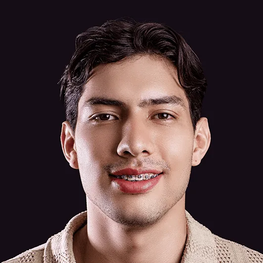

Tres formas de alinear tus dientes y tu mordida. Te explicamos en qué se diferencian para que elijas con criterio, en Cúcuta y en Medellín.
Restablece el equilibrio de la boca y de la cara, y con él la estética facial.
Lo que cambia de una modalidad a otra es el aparato: brackets convencionales, brackets de cristal de zafiro o alineadores transparentes y removibles.
Estudia, previene y corrige las alteraciones del desarrollo, la forma de las arcadas dentarias y la posición de los maxilares.
Brackets fabricados con cristal de zafiro, uno de los materiales más resistentes.
Alineadores transparentes y removibles que transforman tu sonrisa sin interferir con tu estilo de vida.
Ortodoncia con brackets hecha en OralTech. Es la misma persona en las dos fotos.


"Excelente atención y servicios prestados, trabajos de la mejor calidad. Súper recomendados."
"Excelente trabajo. Súper recomendados."
"Quedé muy feliz con el resultado de mi diseño de sonrisa. Desde el primer momento recibí una atención excelente, con mucho profesionalismo, dedicación y cuidado en cada detalle. El resultado superó mis expectativas."
Tres modalidades: convencional, en zafiro e invisible. La convencional corrige las alteraciones del desarrollo, la forma de las arcadas dentarias y la posición de los maxilares. La de zafiro usa brackets de cristal de zafiro, transparentes. La invisible funciona con alineadores transparentes y removibles, sin brackets visibles.
No. Están fabricados con cristal de zafiro, uno de los materiales más resistentes, y son transparentes: no se tiñen ni se vuelven amarillos como puede ocurrir con otro tipo de ortodoncia. Además son tan efectivos como los brackets convencionales.
No. Los alineadores son transparentes y removibles, así que no hay brackets visibles ni restricciones al hablar, comer o sonreír. Es la opción pensada para transformar tu sonrisa sin interferir con tu estilo de vida.
Depende de tu caso y de la modalidad que elijas, así que preferimos no publicar una cifra ni un tiempo genéricos que después no correspondan a lo tuyo. Escríbenos por WhatsApp, cuéntanos qué quieres corregir y te damos la información concreta.
OralTech tiene dos sedes: Quinta Oriental en Cúcuta (Cl. 2 #9 Este-156, Local 1) y El Poblado en Medellín (Cra. 43A #7-50). Escríbenos por WhatsApp y te confirmamos horarios y disponibilidad de ortodoncia en la sede que te quede mejor.
Cuéntanos qué quieres corregir y te decimos si la convencional, la de zafiro o la invisible es la que se ajusta a tu caso.